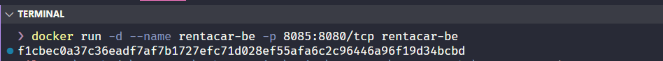
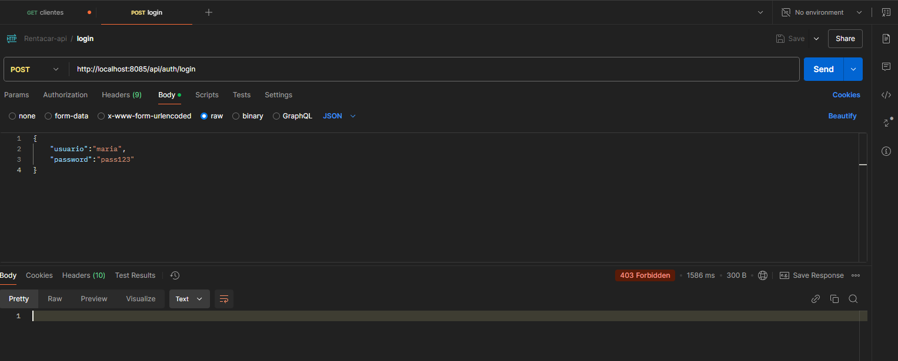
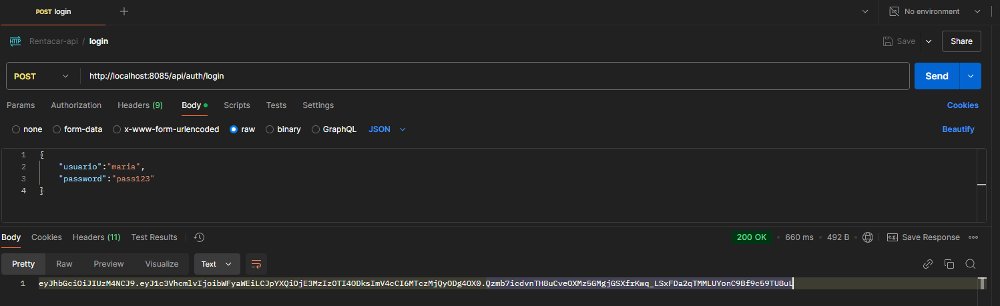
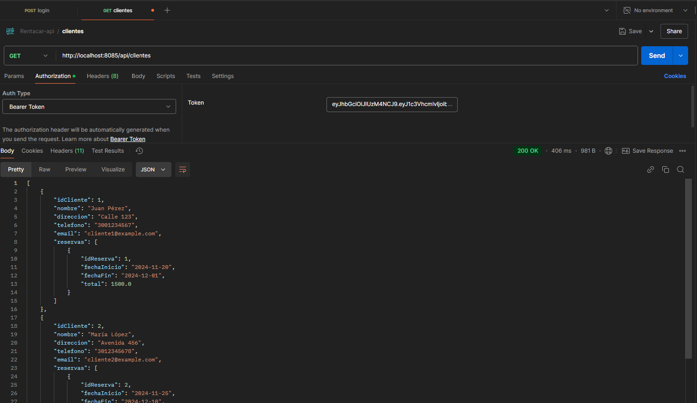

Despliegue del backend con Docker
Una vez finalizado todo el desarrollo del backend, vamos a automatizar el despliegue de este componente con docker. Ya vimos algo de este proceso cuando contenerizamos la base de datos.
Preparar el proyecto para "Empaquetar"
Lo primero que debemos hacer es generar el archivo JAR o WAR de ejecución de la aplicación. Para esto, con gradle ejecutamos el siguiente comando:
./gradlew bootJar
Esto generará un archivo .jar en el directorio build/libs/ (por ejemplo, build/libs/rentacar-0.0.1-SNAPSHOT.jar).
Crear el archivo Dockerfile
El archivo Dockerfile crea la imagen del contenedor para nuestra aplicación, el siguiente es el código de ese archivo para el proyecto:
# Usa una imagen base con Java
FROM eclipse-temurin:23-jdk-alpine
# Crea un directorio para la aplicación
WORKDIR /app
# Copia el archivo JAR generado por Gradle al contenedor
COPY build/libs/rentacar-0.0.1-SNAPSHOT.jar app.jar
# Expone el puerto en el que tu aplicación se ejecutará
EXPOSE 8080
# Comando para ejecutar la aplicación
ENTRYPOINT ["java", "-jar", "app.jar"]
Crear el archivo .dockerignore
El archivo .dockerignore se utiliza para excluir archivos y carpetas innecesarias al construir la imagen:
build/
.gradle/
*.git
*.idea
logs/
Construir la imagen
En la raiz del proyecto, donde creamos el Dockerfile, ejecutamos el comando para construir la imagen:
docker build -t rentacar-be .
Ejecutar el contenedor
Una vez creada la imagen, si no se nos presenta algún problema, podemos ejecutar el contendor con el siguiente comando:
docker run -d --name rentacar-be -p 8085:8085/tcp rentacar-be
Este comando no ayuda a crear y ejecutar un contenedor basado en la imagen de la aplicación. Al ejecutar el contenedor, debe salir en la terminal el ID del contenedor, si no se presentó ningún error.

Si ejecutamos la aplicación, probamos el postman el login, nos sale el siguiente error:

Podemos revisar los errores que se presenten en las aplicaciones dentro de los contenedores. Con el siguiente comando podemos ver los logs de la aplicación ejecutándose en el contenedor:
docker logs rentacar-be
Podemos ver, al final del log un error similar al siguiente:
The last packet sent successfully to the server was 0 milliseconds ago. The driver has not received any packets from the server.
at java.base/jdk.internal.reflect.DirectConstructorHandleAccessor.newInstance(DirectConstructorHandleAccessor.java:62) ~[na:na]
at java.base/java.lang.reflect.Constructor.newInstanceWithCaller(Constructor.java:501) ~[na:na]
at java.base/java.lang.reflect.Constructor.newInstance(Constructor.java:485) ~[na:na]
at com.mysql.cj.exceptions.ExceptionFactory.createException(ExceptionFactory.java:61) ~[mysql-connector-j-8.3.0.jar!/:8.3.0]
at com.mysql.cj.exceptions.ExceptionFactory.createException(ExceptionFactory.java:104) ~[mysql-connector-j-8.3.0.jar!/:8.3.0]
at com.mysql.cj.exceptions.ExceptionFactory.createException(ExceptionFactory.java:149) ~[mysql-connector-j-8.3.0.jar!/:8.3.0]
at com.mysql.cj.exceptions.ExceptionFactory.createCommunicationsException(ExceptionFactory.java:165) ~[mysql-connector-j-8.3.0.jar!/:8.3.0]
at com.mysql.cj.protocol.a.NativeSocketConnection.connect(NativeSocketConnection.java:88) ~[mysql-connector-j-8.3.0.jar!/:8.3.0]
at com.mysql.cj.NativeSession.connect(NativeSession.java:120) ~[mysql-connector-j-8.3.0.jar!/:8.3.0]
at com.mysql.cj.jdbc.ConnectionImpl.connectOneTryOnly(ConnectionImpl.java:935) ~[mysql-connector-j-8.3.0.jar!/:8.3.0]
at com.mysql.cj.jdbc.ConnectionImpl.createNewIO(ConnectionImpl.java:805) ~[mysql-connector-j-8.3.0.jar!/:8.3.0]
... 139 common frames omitted
Caused by: java.net.ConnectException: Connection refused
at java.base/sun.nio.ch.Net.pollConnect(Native Method) ~[na:na]
at java.base/sun.nio.ch.Net.pollConnectNow(Net.java:682) ~[na:na]
at java.base/sun.nio.ch.NioSocketImpl.timedFinishConnect(NioSocketImpl.java:542) ~[na:na]
at java.base/sun.nio.ch.NioSocketImpl.connect(NioSocketImpl.java:592) ~[na:na]
at java.base/java.net.SocksSocketImpl.connect(SocksSocketImpl.java:327) ~[na:na]
at java.base/java.net.Socket.connect(Socket.java:760) ~[na:na]
at com.mysql.cj.protocol.StandardSocketFactory.connect(StandardSocketFactory.java:153) ~[mysql-connector-j-8.3.0.jar!/:8.3.0]
at com.mysql.cj.protocol.a.NativeSocketConnection.connect(NativeSocketConnection.java:62) ~[mysql-connector-j-8.3.0.jar!/:8.3.0]
... 142 common frames omitted
Este error se debe a que el contenedor del backend no está accediendo a la base de datos que está en su propio contenedor, no en el host. Para corregir esto debemos hacer dos cosas: primero, agregar el contenedor de docker en el script del docker compose y agregarlo a la misma red del contenedor de la base de datos, y segundo, cambiar la línea de conexión a la base de datos en el application.properties:
Agregar el backend al docker compose
Ajustamos el archivo docker-compose.yml anterior para agregar la información del backend:
services:
mysql:
image: mysql
container_name: mysql
ports:
- 3307:3306
networks:
- redfullstack
environment:
- MYSQL_ROOT_PASSWORD=root
- MYSQL_DATABASE=rentacardb
- MYSQL_USER=admin
- MYSQL_PASSWORD=admin
volumes:
- mysql_data:/var/lib/mysql
phpmyadmin:
image: phpmyadmin
environment:
- PMA_HOST=mysql
depends_on:
- mysql
container_name: phpmyadmin
ports:
- 8180:80
networks:
- redfullstack
rentacar_be:
image: rentacar-be
container_name: rentacar_be
restart: always
ports:
- 8085:8085
networks:
- redfullstack
depends_on:
- mysql
networks:
redfullstack:
driver: bridge
volumes:
mysql_data:
Cambiar la configuración de conexión a la base de datos
Ahora, debemos cambiar la configuración conexión a la base de datos en el backend, en el archivo properties, cambiamos la línea:
spring.datasource.url=jdbc:mysql://localhost:3307/rentacardb
Por esta:
spring.datasource.url=jdbc:mysql://mysql:3306/rentacardb
Ejecutar todo junto
Ahora solamente es compilar nuevamente el backend y recrear la imagen con el nuevo cambio y luego ejecutar el docker compose:
./gradlew bootJar
docker build -t rentacar-be .
docker compose up -d
Probando todo junto
Una vez se ejecuta el docker compose, con los contenedores arriba, procedemos a hacer pruebas:

